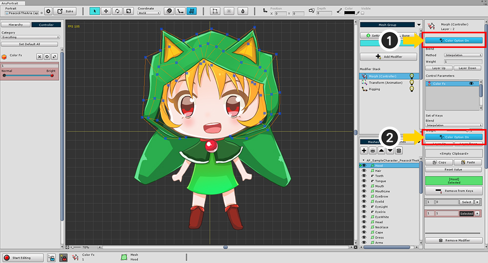
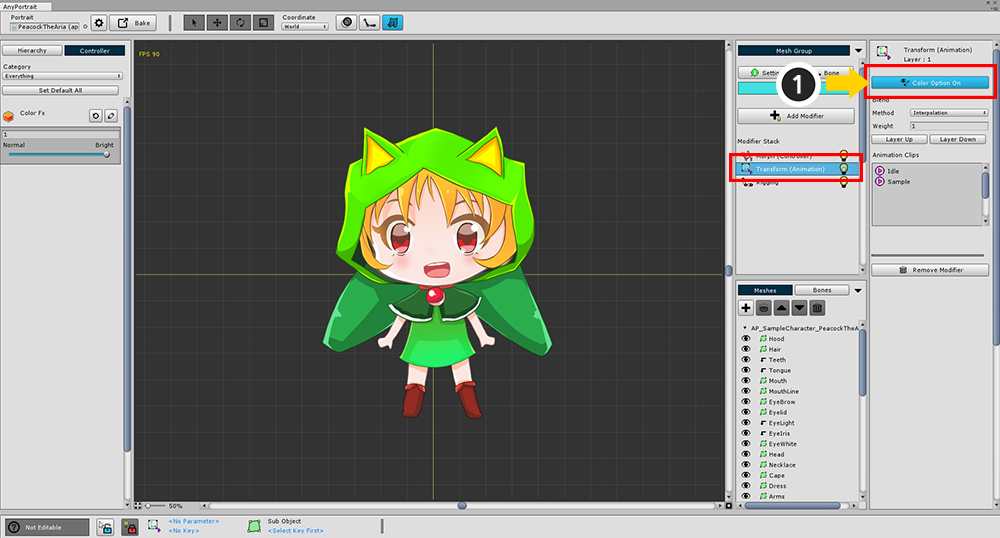

AnyPortrait > 메뉴얼 > 색상 애니메이션을 위한 모디파이어 설정
색상 애니메이션을 위한 모디파이어 설정
1.0.0

색상 효과를 적용하는 모디파이어를 이용하면 캐릭터에 색상 효과를 부여할 수 있습니다.
색상 효과를 적용할 수 있는 모디파이어는 다음과 같습니다.
Transform (Controller)
Transform (Animation)
Morph (Controller)
Morph (Animation)
색상 효과에 대해서 Transform과 Morph는 동일한 처리 과정을 가지므로 필요에 맞게 사용하면 되겠습니다.
Transform (Controller), Morph (Controller) 모디파이어에서 색상 적용하기

컨트롤 파라미터를 이용한 모디파이어에 색상 효과를 지정하는 방법입니다.
(1) 모디파이어 설정의 Color Option을 On으로 바꿉니다.
(2) 현재 컨트롤 파라미터의 키 세트의 설정의 Color Option을 On으로 바꿉니다.

편집 모드를 켠 상태에서 (1) 화면 상단의 색상 속성을 열고 (2) 색상을 지정합니다.
Transform (Animation), Morph (Animation) 모디파이어에서 색상 적용하기

애니메이션에 색상 효과를 적용하는 방법입니다.
(1) 모디파이어 설정의 Color Option을 On으로 바꿉니다.

(1) 애니메이션 편집 모드를 켜고 키 프레임을 선택한 상태에서
(2) 화면 상단의 색상 속성이나 (3) 키프레임 UI에서의 색상 속성을 눌러서 색상을 적용하면 됩니다.
색상 효과가 적용되는 방식
AnyPortrait에서 사용되는 색상 처리 수식은 2X Multiply 입니다.
"결과 색상" = "텍스쳐" x "색상" x 2
이 방식은 최대 2배로 밝아지거나 어두워질 수도 있어서 Multiply 효과와 Additive 효과를 포괄적으로 구현할 수 있습니다.
따라서 기본 색상은 흰색이 아닌 회색 (0.5, 0.5, 0.5, 1)입니다.
단, 알파 채널에 대해서는 Multiply 방식을 사용하므로, 모디파이어가 중첩되면 점점 투명해지는 특징이 있습니다.